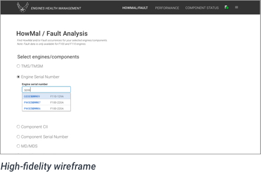
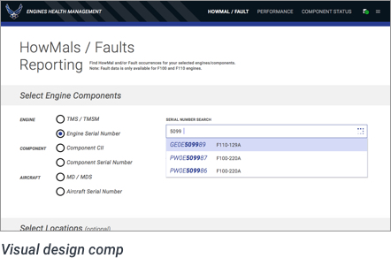

Back to Phase 3: Detailed Design
High-fidelity wireframing and the creation of visual design comps are activities done to create a fully detailed articulation of the interface (plus all its attendant states necessary to support a functionality).
Like low-fidelity wireframes, high-fidelity wireframes are still mostly line renderings representing the interface. But the additional detail at this stage should offer language, labels and fully depicted interactions including success and error cases, and provide guidance for how to handle not just primary use cases but also all edge cases.
Visual design comps should offer presentation details such as how individual components should be visually styled, and how the components relate to one another in the interface.
High-fidelity wireframes and comps serve as the foundation for communicating the final design. For lean documentation practices and usability testing, these artifacts will serve as the design source for a prototype. They also serve as the source material for writing full developer specifications.
 